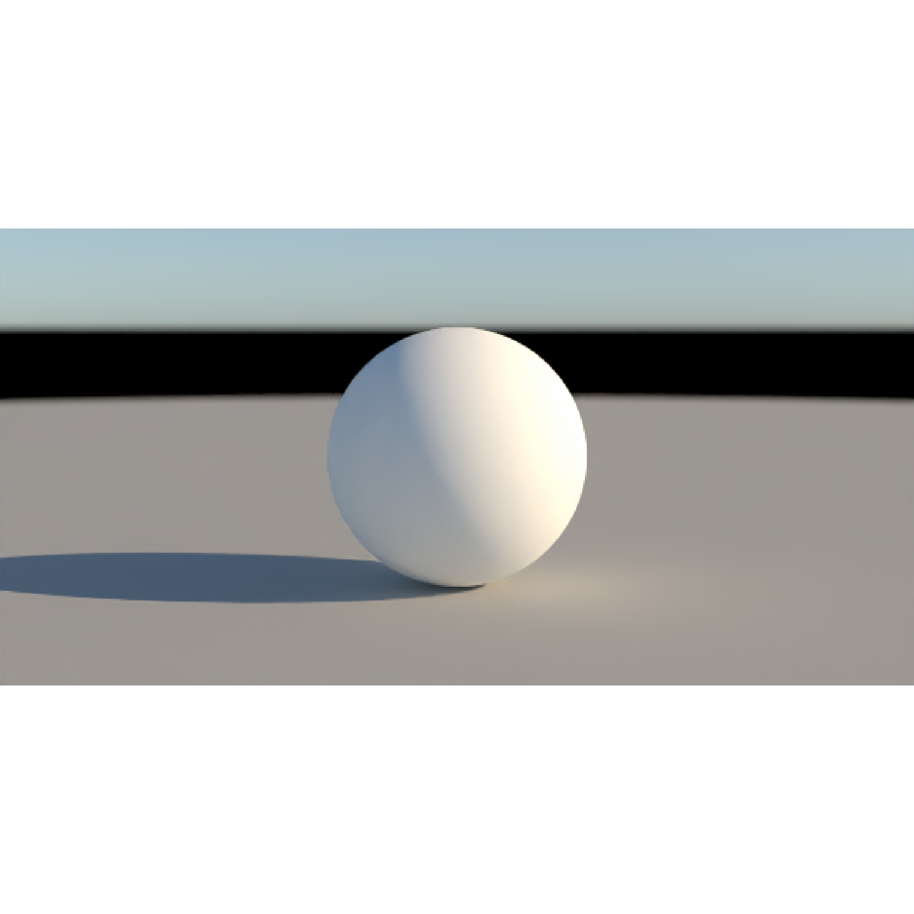

Generate a cached sky EXR with skymodelr::generate_sky_latlong() and use it
as an infinite light. Add it to a scene with add_infinite_light(). The image
represents one observer and illuminates every scene position with the same
sky. Use sky_light() for altitude-dependent lighting and finite-distance haze.
Both constructors include Sun and Moon by default, controlled with sun and
moon, and support optional stars and planets.
sky_light_image(
lat,
long,
datetime,
intensity = 1,
rotation = 0,
name = "sky",
altitude = 0,
visibility = 131.8,
albedo = 0.5,
resolution = 2048,
hosek = TRUE,
render_mode = "all",
turbidity = 3,
wide_spectrum = FALSE,
below_horizon = TRUE,
prague_rgb_correction = TRUE,
prague_rgb_correction_strength = 1,
prague_rgb_correction_gain = "auto",
stars = FALSE,
star_width = 1,
stars_exposure = 0,
planets = FALSE,
moon = TRUE,
moon_atmosphere = FALSE,
moon_hosek = TRUE,
exr_adopted_white = "D60",
exr_metadata = TRUE,
number_cores = 1,
verbose = FALSE,
sun = TRUE,
environment_light_bake_white = FALSE,
environment_light_bake_white_target = "D65",
...
)Latitude in degrees, between -90 and 90.
Longitude in degrees, between -180 and 180.
A single POSIXct date and time. Specify its time zone when
constructing it with as.POSIXct().
Default 1. Nonnegative multiplier for this light's radiance.
Default 0. Additional rotation in degrees around the world
Y axis, using the same convention as infinite_light().
Default "sky". Unique light name within the scene.
Default 0. Observer altitude in meters above sea level for
the entire sky image. Prague supports 0–15000 m with its full-altitude data.
Default 131.8. Prague meteorological visibility in kilometers,
from 20 to 131.8. Smaller values produce stronger haze.
Default 0.5. Uniform ground reflectance for the sky model,
between 0 and 1. Local surface materials are specified separately.
Default 2048. Height of the cached image in pixels;
its width is twice the height.
Default TRUE. Generate a Hosek sky. Set FALSE to use Prague.
Default "all". Select sky and Sun ("all"), sky without
the solar disk ("atmosphere"), or the solar disk alone ("sun").
Moon, star, and planet switches are independent of this selection.
Default 3. Hosek turbidity, from 1.7 to 10.
Default FALSE. Use Prague's 55-channel sea-level data.
Default TRUE. Include atmospheric radiance below the horizon.
Default TRUE. Apply skymodelr's Prague RGB
tint correction.
Default 1. Strength of the Prague RGB
tint correction. Must be finite and nonnegative: 0 disables correction,
and 1 applies the full calibrated correction.
Default "auto". Calibrated Prague RGB
gains, or a numeric vector of three finite, positive linear RGB multipliers.
Default FALSE. Composite stars into the sky image.
Default 1. Stellar point-spread size, passed to
skymodelr::generate_stars().
Default 0. Artistic exposure adjustment for stars, in stops.
Default FALSE. Composite bright planets into the sky image.
Default TRUE. Composite a Moon image into the sky.
Set FALSE when adding a separate moon_light().
Default FALSE. Include atmospheric scattering of moonlight.
Default TRUE. Use Hosek for moonlight scattering.
Set FALSE to use Prague.
Default "D60". Adopted white for EXR metadata:
"D60", "D65", or numeric XYZ with Y = 1. Does not change image pixels.
Default TRUE. Attach skymodelr color metadata to the EXR.
Default 1. CPU threads used to generate the cached image.
Default FALSE. Print sky-generation progress information.
Default TRUE. Include the solar disk when selected by render_mode.
Set FALSE to omit it from the image.
Default FALSE. Bake chromatic adaptation
from the generated EXR's white_current metadata into its RGB pixels before
using it for lighting. Requires exr_metadata = TRUE. The adapted image is
cached and reused for still images and animations.
Default "D65". Target white point
when baking: "D50", "D55", "D60", "D65", "D75", "E", or a finite
numeric XYZ vector with positive Y (normalized to Y = 1). Unlike
exr_adopted_white, this changes the image pixels when baking is enabled.
Additional named arguments forwarded by
skymodelr::generate_sky_latlong() to its star, planet, and Moon generators.
Pass settings directly; location, datetime, and the cached filename are
managed by this light. Native atmospheric controls belong to sky_light().
A ray_infinite_light containing a cached-image sky description.
Image generation happens before rendering and is cached for the R
session. Changing only intensity, rotation, or name reuses the image.
Changing the baked target white point reuses the generated sky and caches a
separate adapted image. White-balance controls belong to this light; pass the
light to add_infinite_light() before calling render_scene() or
render_animation().
Install any required Prague data with skymodelr::download_sky_data() first;
rendering does not download datasets.
With zero rotation, north is world +Z and east is world -X. Date, time, and
observer altitude remain fixed throughout the image. This light supports the
same integrators as infinite_light() and adds no finite atmospheric haze.
Use render_scene()'s iso to adjust exposure.
For a separately sampled Sun, set render_mode = "atmosphere" and add
sun_light() with matching location, time, and atmospheric settings. This
avoids relying on the environment image to resolve the small solar disk.
time = as.POSIXct("2026-06-21 18:00:00", tz = "America/New_York")
scene = sphere(material = diffuse("white")) |>
add_object(generate_ground())
scene |>
add_infinite_light(sky_light_image(40.7, -74, time)) |>
render_scene(
lookfrom = c(0, 1, 10),
lookat = c(0, 0, 0),
width = 600,
height = 300,
samples = 32,
iso = 3
)

# A Prague image sky with an independently sampled solar disk.
# Install Prague data with skymodelr::download_sky_data() before rendering.
scene |>
add_infinite_light(sky_light_image(
40.7,
-74,
time,
hosek = FALSE,
render_mode = "atmosphere",
altitude = 0,
visibility = 50,
albedo = 0.3
)) |>
add_infinite_light(sun_light(
40.7,
-74,
time,
sky_args = list(altitude = 0, visibility = 50, albedo = 0.3)
)) |>
render_scene(
lookfrom = c(0, 1, 10),
lookat = c(0, 0, 0),
aperture = 0,
width = 600,
height = 300,
samples = 32,
iso = 3
)
#> Error: The Prague sky model coefficient file 'SkyModelDatasetGround.dat' is not installed. Run download_sky_data(sea_level = TRUE, wide_spectrum = FALSE) explicitly to download it.